АЦП и виды графики
Ф04 · процессор · дискретизация · растр / вектор
форматы — следующая пара
Виды графики
- растровая — набор точек
- векторная — кривые и заливки
- трёхмерная — вектор + растровые текстуры
- текст — коды + шрифт
Фракталы в курсе не разбираем · 3D — мост к Ф08
Свет — аналог
Источник непрерывный, глаз непрерывный. Можно спрашивать сколь угодно часто и мерить сколь угодно точно — пока не нарезали.
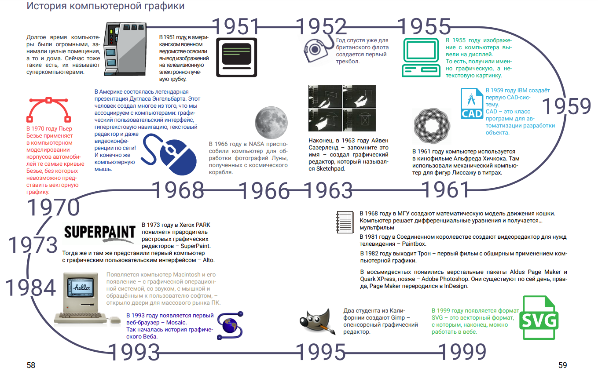
Элементы ЦФК
Объектив · затвор · матрица · процессор · накопитель

Свойства снимка — от всех звеньев, не только от мегапикселей
Процессор
- фокус и экспопара
- АЦП
- файл и сжатие
- запись на карту

АЦП
Устройство, переводящее входную физическую величину (напряжение с пикселя) в числовой код.
На слайдах pptx «дискредитация» — в тетради: дискретизация
Три шага
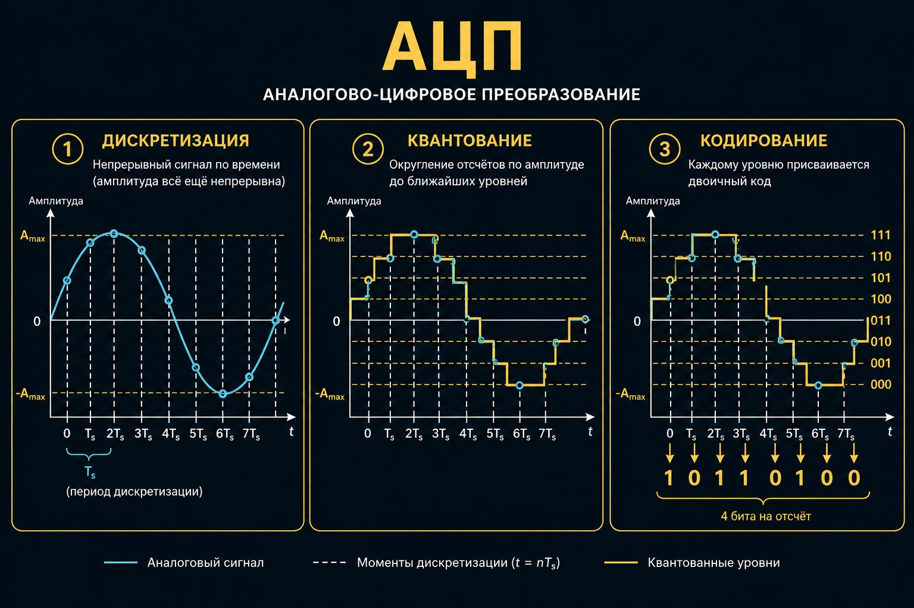
Дискретизация
Непрерывную функцию заменяем отсчётами в выбранных точках аргумента. Уровень сигнала ещё непрерывный.
Звук — время. Кадр — плоскость. Видео — кадры × пиксели.
По времени и по пространству
FPS — сколько кадров в секунду. Сетка — сколько пикселей на кадр. Чаще / мельче — правдоподобнее и тяжелее.
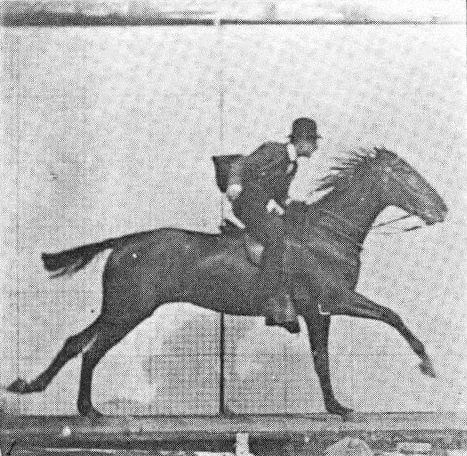
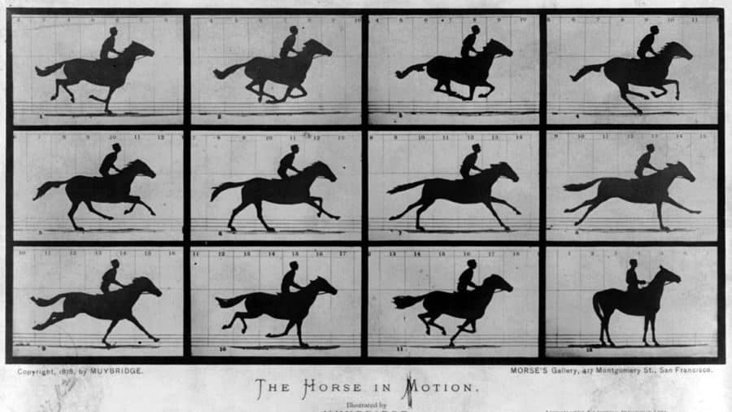
Квантование
Диапазон режем на конечное число уровней и округляем отсчёт до ближайшего.
Дискретизация — сколько раз спросили · квантование — насколько грубо ответили
Три вида сигнала
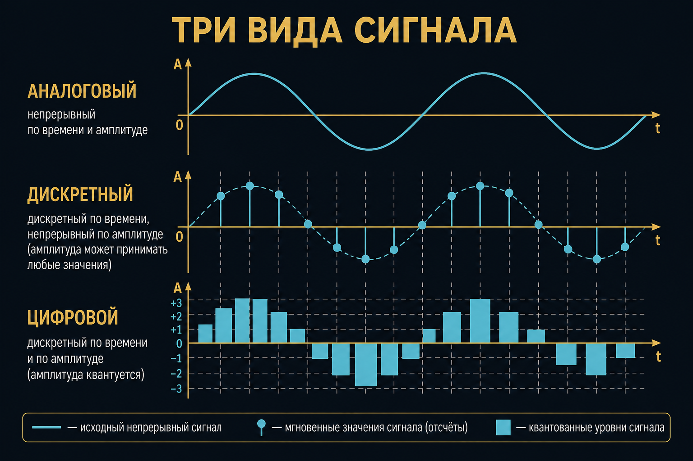
1 бит
Два состояния: 0 или 1. Свет горит / нет. Текст как чёрное / белое.
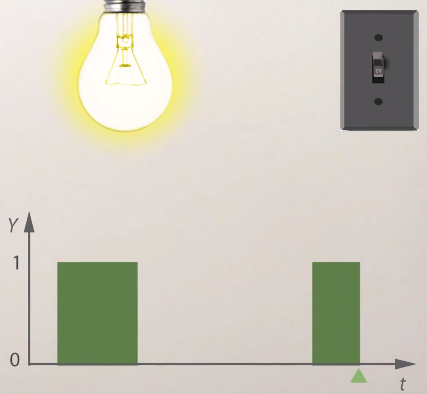
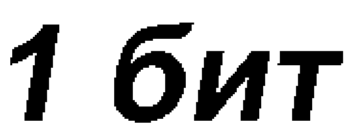
Глубина цвета
N = 2nуровней при n битах на канал
8 бит → 256 · RGB 8+8+8 = 24 бит/пиксель
B = 23×8 = 16 777 216типовая задача билета
24 бита в вебе
Три полутоновых канала. Внутри файла обычно сжато — несжатый вес считают отдельно.
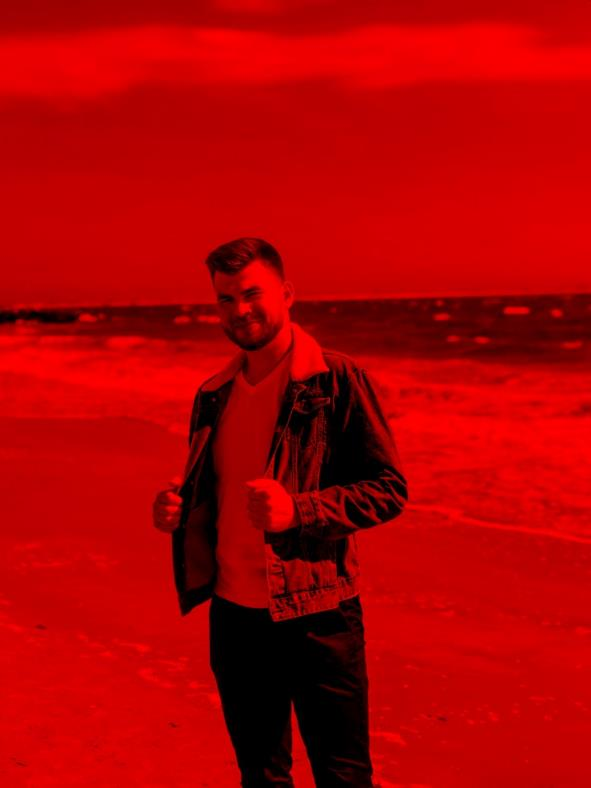
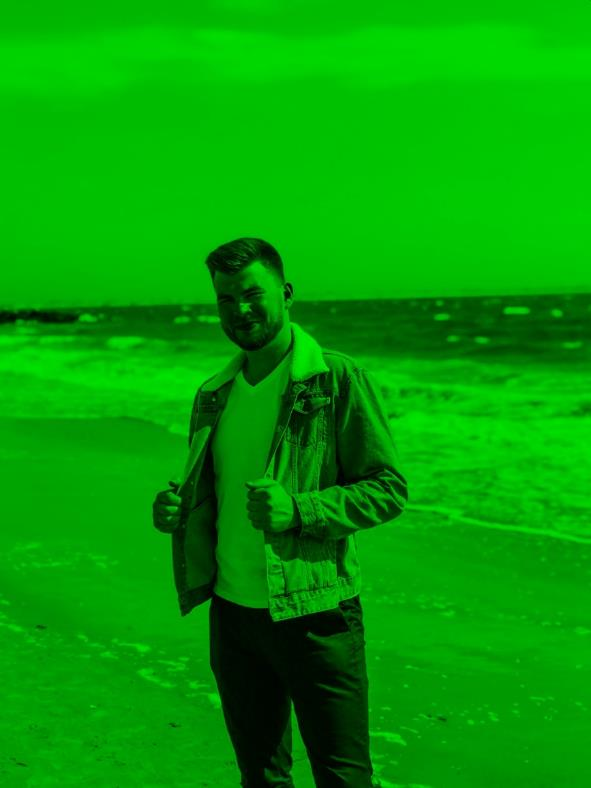
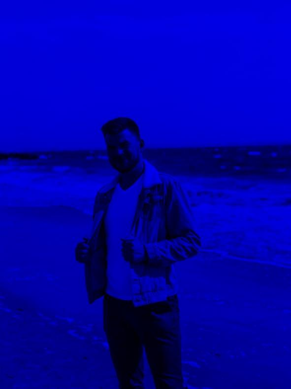
Аттестация
Частота оценок — дискретизация. Шкала баллов — квантование. Чаще и мельче — честнее и толще ведомость.
Теорема Котельникова
fs > 2 fmaxиначе верх спектра не восстановить
Слух ~20 кГц → 44,1 кГц с запасом. Редкая сетка кадра — невосстановимые детали и лесенка.
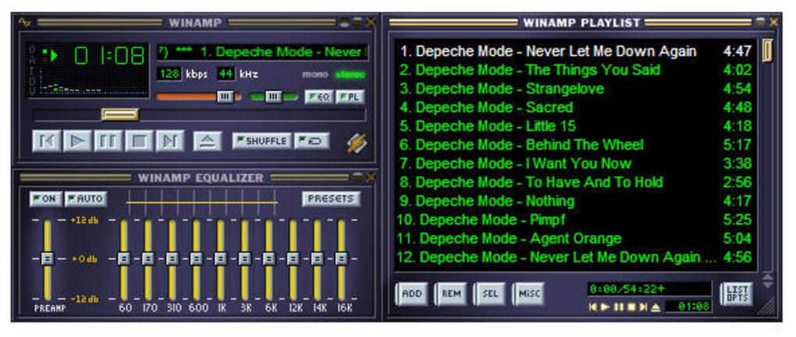
Вес несжатого растра
V = W · H · b / 8байты · b — бит на пиксель
16 оттенков → 4 бит. 3000×4000 → 6 000 000 байт.
От «сложности» сцены несжатый объём не зависит
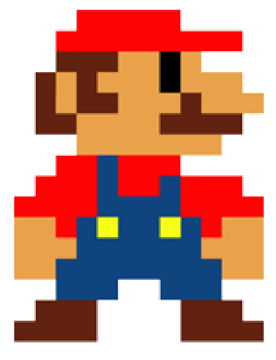
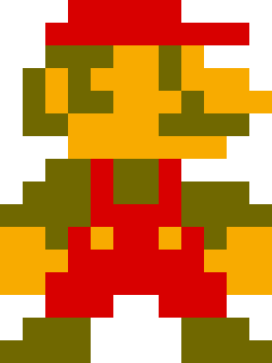
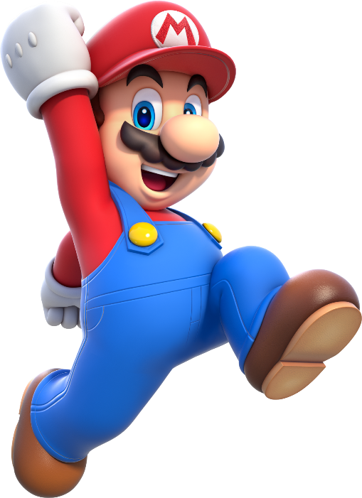
Вектор
Кривые и заливки. Масштаб без распада на пиксели. Цена: разная интерпретация ПО, слабый авто-ввод, на экран всё равно растеризация.
Трассировка фото
Векторизация снимка даёт кашу мелких контуров. Для фасада бессмысленно. Горизонтали на карте — ещё спорно.
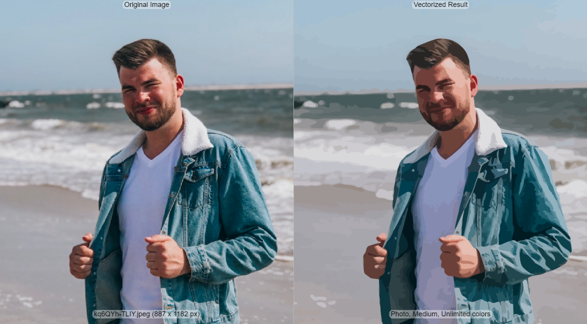
Растр
Упорядоченный набор пикселей — bitmap. Объектов нет, только независимые точки с координатой и цветом.
Растр и вектор
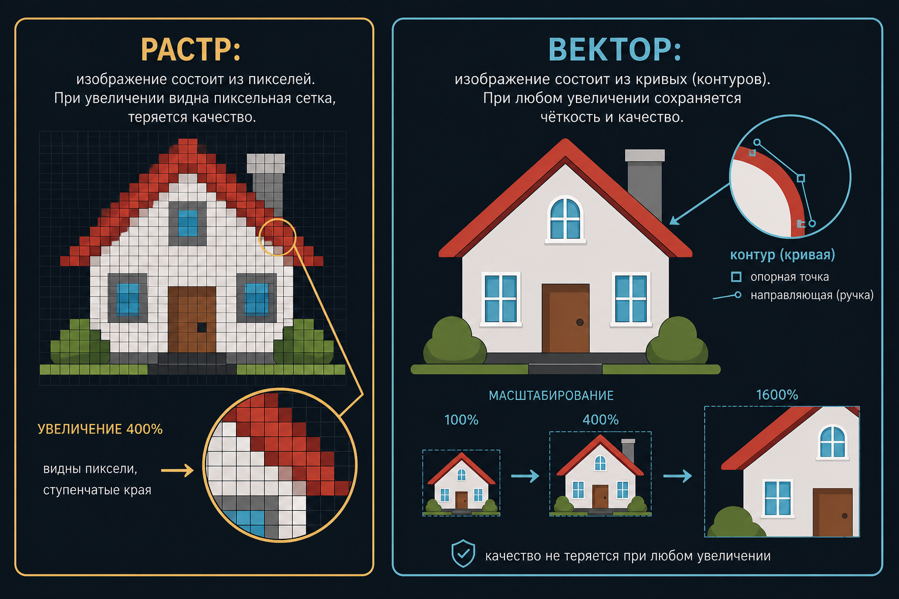
Сравнение
| Вектор | Растр | |
|---|---|---|
| из чего | кривые | пиксели |
| ввод | обычно руками | камера, сканер |
| масштаб | не распадается | пикселизация |
| трансформ. | без потерь записи | всегда с потерями |
Антиалиасинг
Соседей «лесенки» красят промежуточным цветом. Контур чуть мылится — ступенька пропадает.
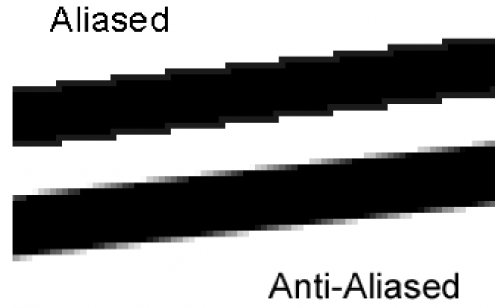
Текст
Коды символов + файл шрифта. Замена шрифта меняет начертание, не смысл. Современные шрифты — вектор.
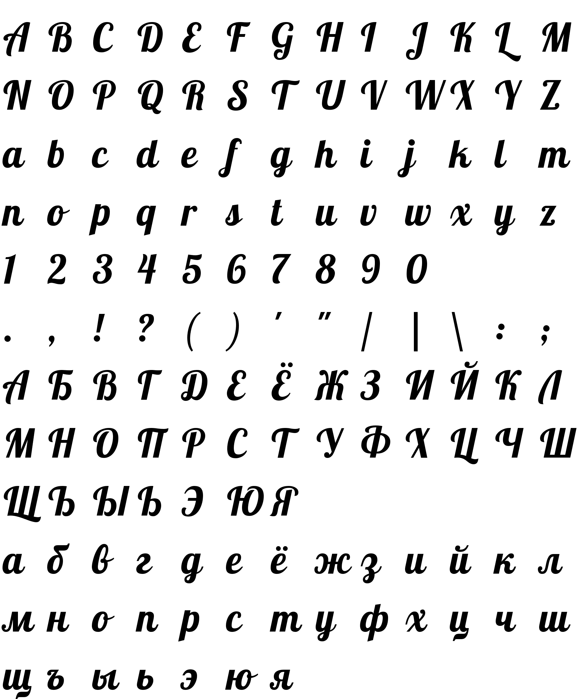
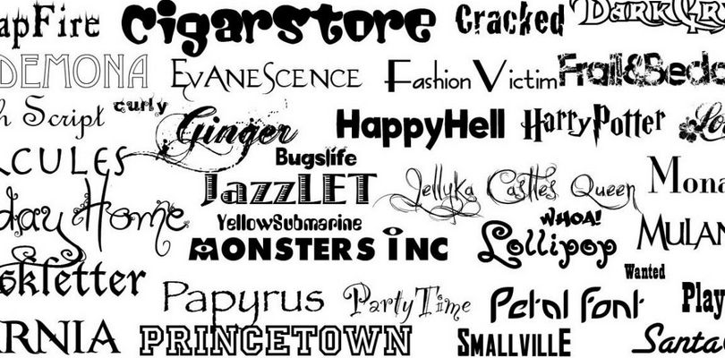
Вопросы
- Дискретизация vs квантование?
- 3×8 бит RGB — сколько оттенков?
- 16 оттенков, 3000×4000 — вес?
- Почему 44,1 кГц?
- Зачем антиалиасинг?